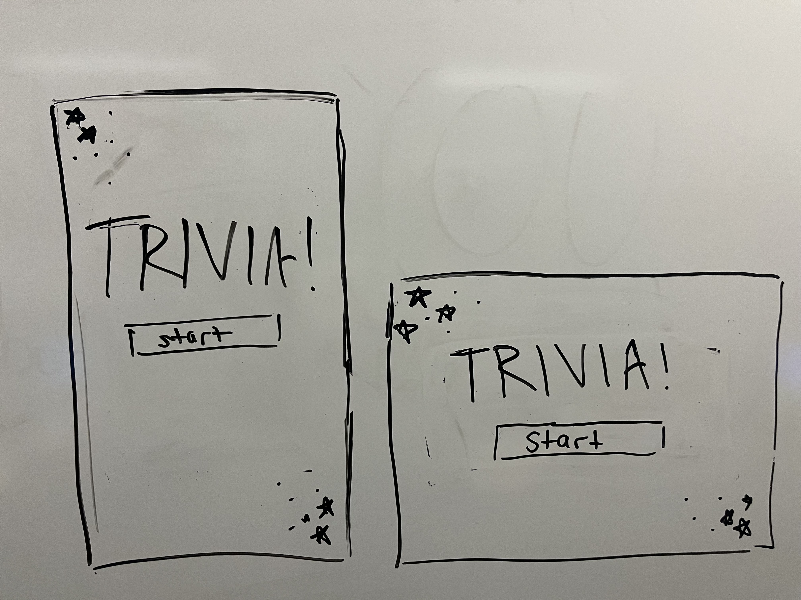
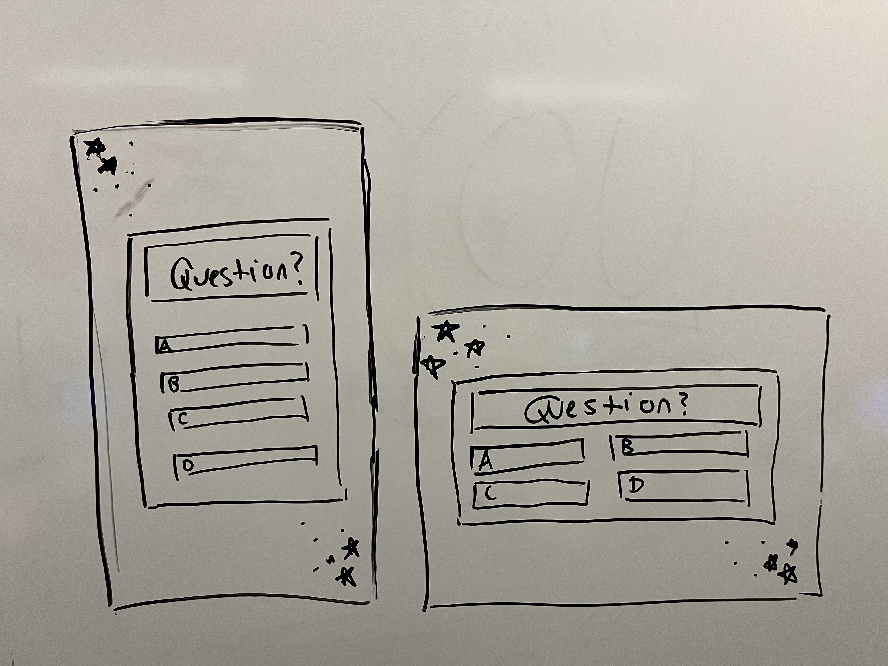
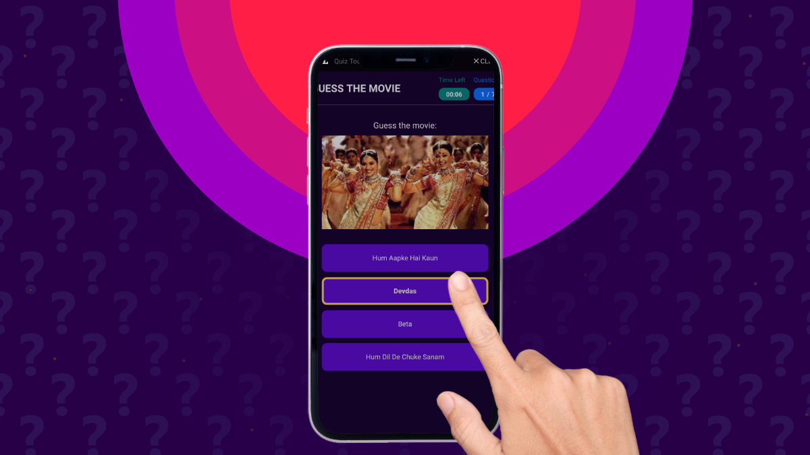
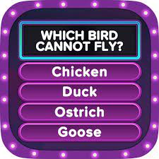

First I chose the trivia API, which holds a bunch of trivia questions that can be sorted by topic, difficulty, and multple choice/true false. I chose to use all multiple choice questions, and have the user pick the number of questions they want to answer as well as the topic of the questions and difficulty level.
here are the first sketches I made of what I wanted the page to look like.
 I used these examples from online as a reference to create my design for the page.
 I first planned out what I wanted it to look and work like. Then from there I when back and forth with the css,
html, and javascript to get everything working correctly. I used the gif finder as an example for the javascript
code and applied it to my own api. I did a lot of testing throughout the process to make sure things worked.
When I ran into issues with certain bits of code, like randomizing the order for the array of questions and
counting up the correct number of correct answers, I would ask chatGPT. So I cant say I completely wrote
everything on my own.
Overall Im pretty happy about how it turned out. I tried to test as many questions as possible to see if they
all fit into the boxes tey are supposed to, but I cant say for sure that they all do. Also its very possible
that if you pick a topic with not enough different questions, it will repeat them do to the api. The api sorts
the questions by difficulty as well, but sometimes the questions are still very hard even in easy. (But maybe
thats just me) There is also a little quick with saving the number selected, you must click out of the box
before you refresh the page so it saves properly. There are no real special features, you just pick how you want
to play, answer questiosn, and the get your results at the end.
IMPORTANT!!! for some reason when you open up the page in edge it does not work but it works perfectly in
chrome. Please use chrome. Im sorry I cant fix it.